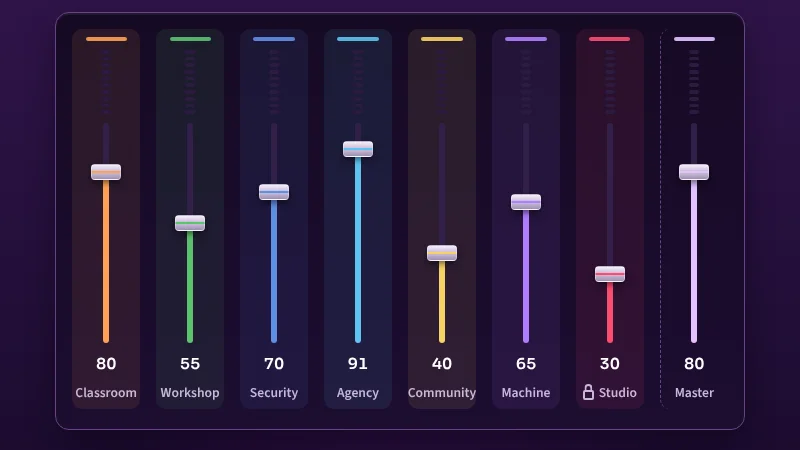

Gibson Nyendwa
I help people and small businesses move forward through education, practical digital work and creative technology. Based in Birmingham, I build websites and AI systems, support young people with SEND and make music as The Unsaid Sound.
Or try the mixing desk: seven faders, seven parts of my story.


Selected work
Three projects that show how I work: one for the web and the cloud, one for business, one for AI.
-

This portfolio
Built for the AWS Student Builder Challenge in ten days, with a mixing desk that plays my life. Plain HTML, CSS and JavaScript, deployed from GitHub.
My role: everything, from design and code to audio and AWS setup.
-

Gibcom Marketing Support
A digital marketing and cybersecurity agency serving over 500 customers: websites, search, Google Business Profile and practical AI for small businesses.
My role: founder and director.
-

Clara, the Gibcom inbound line
An AI voice assistant being built to answer enquiries, qualify them and book callbacks, so a small team never misses a call. Not taking calls yet.
My role: conversation design, call flow and the integration plan.
All projects
-
Gibcom Marketing Support
A Birmingham digital marketing and cybersecurity agency serving over 500 customers since 2016.
What I built: the business, the team including an apprentice, the service model and the client reporting routine.
-
Birmingham Local Biz Support
A free directory for West Midlands businesses, founded 2021, so local trade is easy to find.
What I built: the directory, the listing workflow and the publication growing around it.
-
Clara, the Gibcom inbound line
An AI voice assistant, in development, designed to answer enquiries, qualify them and book callbacks. Part of the private AIBOS Command Centre.
What I built: conversation design, call flow and the plan for integrating it with the enquiry process.
-
AIBOS Command Centre
A governed executive command centre in Obsidian, built with AI coding agents, that runs the business from one screen.
What I built: architecture, governance rules, staged build plan, agent orchestration.
-
SEND Life Transition
A YouTube channel and podcast for families navigating transition for young people with SEND.
What I built: content pillars, scripts, production workflow.
-
This portfolio
Built for the AWS Student Builder Challenge in ten days, hosted on Amplify, with a mixing desk that plays my life.
What I built: HTML, CSS, JavaScript, Web Audio, Amplify Hosting, CloudFront, IAM, Budgets.
The mixing desk
Push a fader up. Every channel is a part of my life. Prefer to read? Read the seven stories.
The desk needs JavaScript to play. All seven stories are below as text.
Read the seven stories as text
I started working with children and young people in 2006. The settings had long names and complex needs: specialist SEND schools, residential care, a therapeutic community. What I learned there is simple. Most people have been told what they cannot do. My job is to be the person who stays long enough to prove otherwise.
For more than ten years that has meant Ruskin Mill Trust, and today Argent College in Birmingham's Jewellery Quarter. I support young people across textiles, willow, jewellery, horticulture and biodynamic farming on a rooftop in the middle of the city. Craft is how we teach when words are not enough.
Somewhere in those years I also built a business. Gibcom Marketing Support started in 2016 because local firms kept asking me for help with websites and search, and it grew into a digital marketing and cybersecurity agency with over 500 customers. I collected the credentials to do it properly: ISO 27001, CISMP, CompTIA Security+. Small businesses deserve the same protection as big ones.
I am still a student. A BA in Psychology with Atlantic International University, a Level 3 Award in Education and Training, and now AWS, because I want to understand the cloud I ask my clients to trust.
And there is music. The Unsaid Sound is where the rest of me lives. If you want to hear it, push a fader.
Craft is how we teach when words are not enough.
- Based in
- Birmingham, UK
- Working with young people
- Since December 2006
- Now
- Tutor Assistant and Support Worker, Argent College
- Runs
- Gibcom Marketing Support, since March 2016
- Studying
- BA Psychology (AIU) and Level 3 Award in Education and Training
- Member
- MBCS, BCS The Chartered Institute for IT
Qualifications and certificates
- Education
- NCFE Level 3 Supporting Teaching and Learning (Sandwell College); Level 3 Award in Education and Training, City & Guilds (in progress); BA Psychology, Atlantic International University (in progress); Higher Certificate in Criminology and Criminal Justice, University of Essex.
- Leadership and data
- Help to Grow: Management and Leadership, Aston University; Data Skills Bootcamp, University of Birmingham.
- Security
- Google Professional Cybersecurity Certificate; ISO 27001; CISMP; CompTIA Security+; CAPSLOCK practitioner; MBCS, British Computer Society.
Certificates and short courses (25+)
Security certifications
- Google Cybersecurity Professional Certificate (Coursera), Dec 2023
- Google Cybersecurity Specialization, Dec 2023
- Certified Cyber Security Practitioner, CAPSLOCK, Sep 2023
- BCS Foundation Certificate in Information Security Management Principles (CISMP), Aug 2023
- ISO/IEC 27001:2022, BSI, Aug 2023
- Introduction to Computers and Operating Systems and Security, Microsoft, Jan 2024
Networking and IT
- Introduction to Cybersecurity, Cisco, May 2023
- Networking Basics, Cisco, Jun 2023
- Microsoft Technology Associate: Windows Operating System Fundamentals, uCertify, Apr 2023
- Data security, Learning Curve Group, Apr 2023
LinkedIn Learning
- ISO 27001:2022-Compliant Cybersecurity: Getting Started, Jul 2023
- Building and Managing a Cybersecurity Program, Jun 2023
- Building and Auditing a Cybersecurity Program, Jun 2023
- Cybersecurity Foundations: Governance, Risk, and Compliance, Jun 2023
- ISO 27001:2013-Compliant Cybersecurity: Getting Started, Jun 2023
- IT and Cybersecurity Risk Management Essential Training, May 2023
- IT Help Desk for Beginners, May 2023
- Windows 10: Administration, Feb 2022
- Microsoft 365 Essential Training for Administrators, Feb 2022
- IT Service Desk: Management Fundamentals, Feb 2022
- CompTIA IT Fundamentals Cert Prep 1 and 2, Nov 2020
- Cert Prep: CompTIA Security+ (SY0-501): The Basics, Jun 2020
- IT Service Desk Careers and Certifications: First Steps, Jun 2020
- Leadership Fundamentals, Mar 2017
Full list with credential links on LinkedIn.
Tech superpowers
Six things I can do that most people in one room cannot, and where each one came from.
- 20years supporting children and young people
- 10years running Gibcom Marketing Support
- 500+Gibcom customers
- 25+certificates and short courses
- 25+original tracks as The Unsaid Sound
-
Patience at scale
Twenty years supporting young people with SEND and complex needs. You learn to break anything into steps a person can actually take.
Differentiated teaching, behaviour support, Functional Skills. NCFE Level 3 STL; Level 3 AET in progress.
-
Threat sense
Small businesses were being phished and had nobody to call. So I became the person to call.
ISO 27001, CISMP, CompTIA Security+, Google Professional Cybersecurity Certificate, CAPSLOCK practitioner course (University of Birmingham), MBCS.
-
Found in search
Gibcom grew because I could make a Birmingham plumber show up on Google before the national chains.
SEO, Google Business Profile, conversion optimisation, Merchant Center feeds. Over 500 customers.
-
Agent builder
I stopped doing repetitive work by hand and started building systems that do it while I sleep.
AI agents and automations, voice assistants, MCP integrations, an Obsidian command centre, Claude Code. Data Skills Bootcamp (University of Birmingham).
-
Hands in the soil
Biodynamic farming on a city rooftop teaches you that systems take time and inputs matter.
Horticulture, willow, textiles, jewellery. Teaching craft as a route to confidence.
-
Sound as story
Music is where I say the things that do not fit in a report.
The Unsaid Sound, Invincible Battles, stage performance as 1st Grail Knight in Parsifal.
-
Now learning: AWS
This site is the coursework. Amplify Hosting, CloudFront, S3, IAM and Budgets, in progress since 27 October 2026.
The tracklist
Every album has a running order. These are the tracks that shaped mine, from my first job to the one I am doing now. Some overlap, because life does.
Play the full tracklist: 11 roles since 2003
- 012003
Assistant Dean of Students, residential life
Apostolic Church of Pentecost of Canada. Where I learned that looking after people is a job worth doing well.
- 022006
Living and Learning Assistant
The Loddon School, Hampshire. Children with autism and severe learning disabilities; personalised, proactive support only.
- 032009
Community Support Worker and Health Care Assistant
Heart of England Mencap and Nurse Plus. Learning disability support in the community and in care settings.
- 042010
Residential Support Worker
Tadley Court School (Priory Group). A 24-hour curriculum for young people aged 5 to 19 with autism and complex needs.
- 052013
Residential Child Care Practitioner
Beaufort Care Group. Safe, nurturing homes where young people could build resilience.
- 062015
Therapeutic Child Care Practitioner
The Mulberry Bush, Oxfordshire. Therapeutic care for severely traumatised primary-aged children.
- 072016
Founder, Gibcom Marketing Support
A Birmingham digital marketing and cybersecurity agency. Still running, ten years on.
- 082016
Housing Support Worker
Two Saints. Helping people out of homelessness and back on their feet, alongside the agency.
- 092021
Birmingham Local Biz Support
A free directory for West Midlands businesses, because visibility should not depend on budget.
- 102023
Cyber Security Practitioner
CAPSLOCK. Security strategy, awareness training and incident thinking for real organisations.
- 11Now
Tutor Assistant and Support Worker, and a student again
Argent College, Birmingham. Plus a BA in Psychology, a Level 3 Award in Education and Training, and this AWS portfolio.
The podcast
Video podcast
SEND Life Transition
Practical conversations and guidance for young people with SEND, families and professionals navigating education, independence and adult life.
Topics include EHCPs, post-16 SEND support, college, preparing for adulthood, neurodiversity and emotional wellbeing.
Visit the YouTube channel (opens in a new tab) Subscribe on YouTube (opens YouTube in a new tab, where you can choose to subscribe)
Videos load from YouTube's privacy-enhanced domain (youtube-nocookie.com), and only when you press play. Once a video loads, YouTube processes data under its own policies: privacy-enhanced mode reduces this but does not remove it. How this site handles third parties.
Let's talk about your next project
Whether it is a website that needs to be found, a business that needs securing, a question about SEND education, or a song, I read everything that comes in. Send an email or book a 30-minute call.
Send an email
Tell me what you are working on and what you need. Write to info@gcmarketingsupport.co.
Send an emailBased in Birmingham, UK.
I use what you send only to reply to you. Nothing goes on a mailing list. Privacy notice.
Book a 30-minute call
A project discovery call with me, online. Pick a slot that suits you.
Book a 30-minute callOpens my Calendly booking page. Choose Zoom or Google Meet when you book. Showing it here loads content from calendly.com.